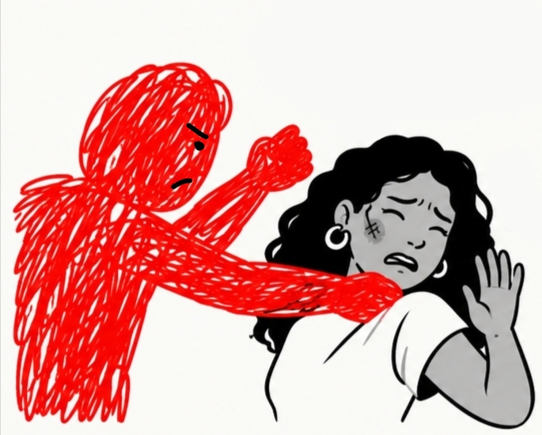
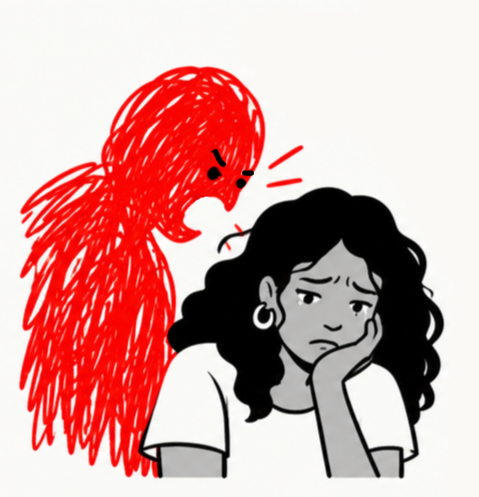
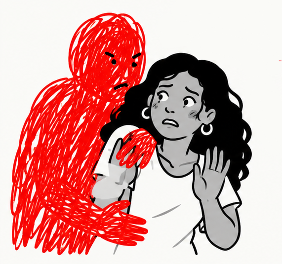
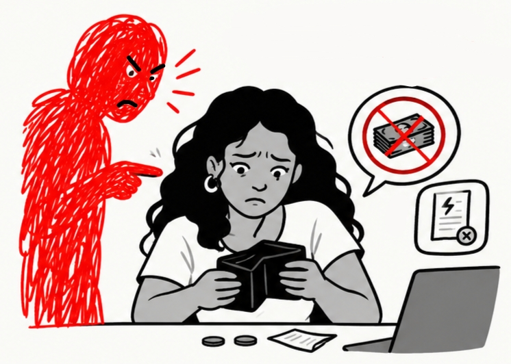
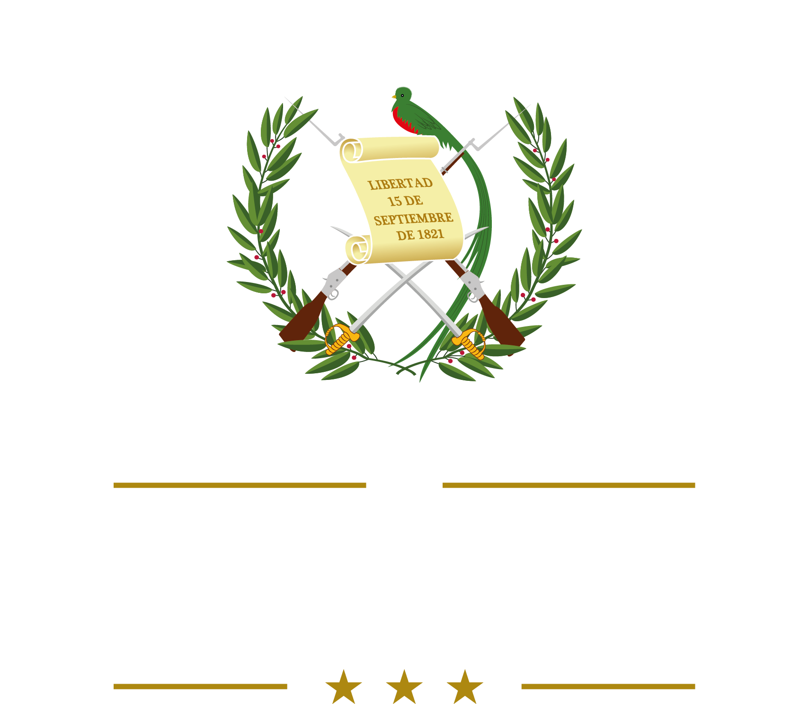
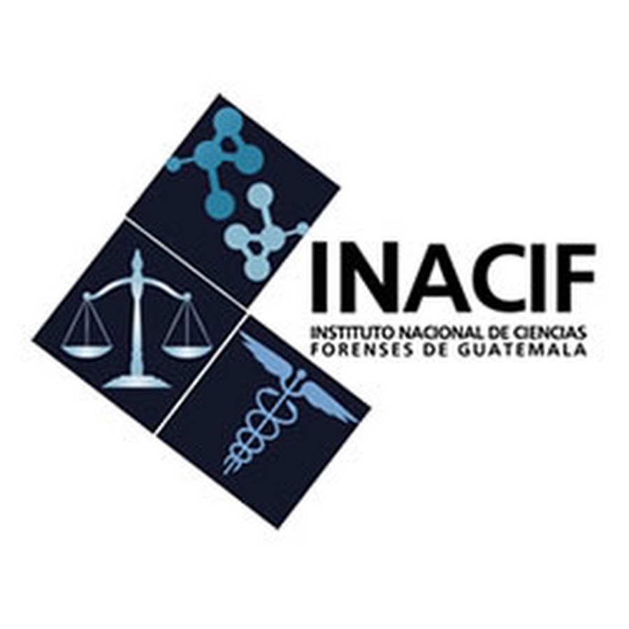
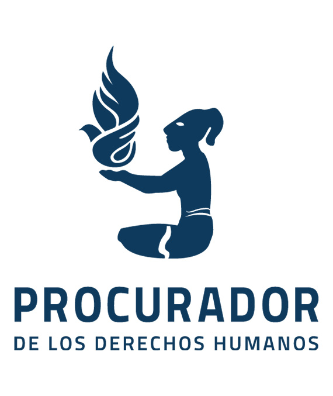
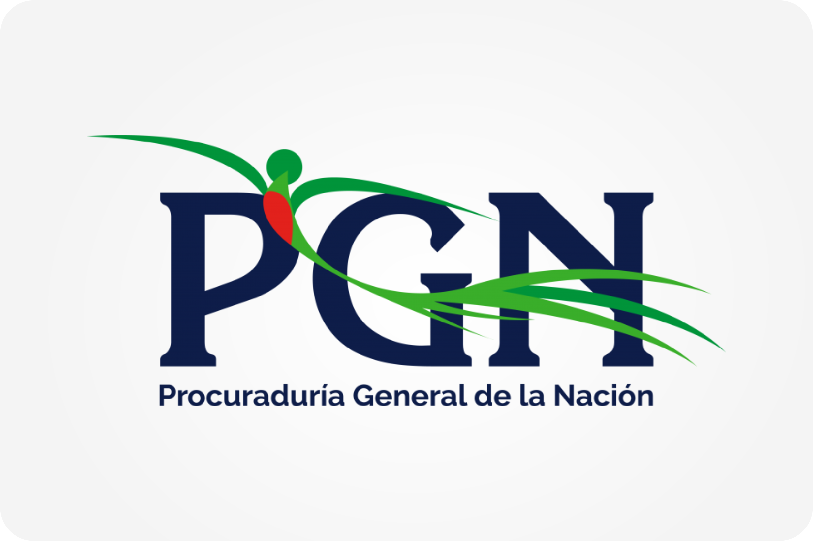
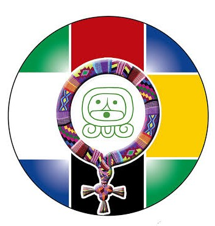

¿Qué es la violencia contra la mujer?
En Guatemala, la Ley contra el Femicidio y otras Formas de Violencia Contra la Mujer (Decreto 22-2008) reconoce como violencia cualquier acción u omisión, basada en su género, que le cause muerte, daño o sufrimiento físico, sexual, psicológico o económico, tanto en el ámbito público como en el privado.
Formas en las que puede presentarse

Golpes, empujones, heridas o cualquier agresión al cuerpo.

Amenazas, humillaciones, control, celos o aislamiento.

Cualquier acto sexual sin su consentimiento.

Controlar su dinero, impedirle trabajar o quitarle sus bienes.
El ciclo de la violencia
Muchas mujeres reconocen este patrón en su relación. Se presenta en tres fases que suelen repetirse:
Fase 1 · Acumulación de tensión
Tu pareja se muestra irritable y tenso sin una razón clara. Te humilla, se burla de ti o te ridiculiza. Sientes miedo e inseguridad, intentas calmar la situación y evitas lo que crees que le molesta, con la esperanza de que pase y de que cambie.
Fase 2 · Agresión
Se rompe el diálogo y el entendimiento. Tu pareja descarga su enojo con golpes, empujones, pellizcos o palabras ofensivas; puede negarte el dinero para la comida u obligarte a tener relaciones sexuales.
Fase 3 · Reconciliación
Pasado un tiempo, tu pareja se muestra cariñosa, te pide perdón, demuestra su arrepentimiento y te compensa de distintas formas; promete que no volverá a ocurrir y que va a cambiar. Sientes pena y a veces culpa, pero te ilusiona retomar la relación.
Números de Emergencia
Si tu vida está en peligro, llama de inmediato:
Su proceso, paso a paso
Esta es una guía general del proceso. Cada caso es distinto: el personal del juzgado le explicará los detalles específicos de su situación.
- 1
Juzgado de Paz
Solicitud de medidas de seguridad. Es el primer paso: cuentas tu situación al personal del juzgado y solicitas que se te proteja. Si temes que tus hijas o hijos estén en riesgo, menciónalo para que puedan incluirse en la solicitud.
- 2
Medidas de seguridad
Se brinda protección y orientación. El juez puede ordenar medidas para prevenir nuevas agresiones, por ejemplo que el agresor no se acerque a ti. También recibes orientación sobre los pasos que siguen. Estas medidas protegen, pero no significan que el agresor ya fue condenado.
- 3
Agencia Fiscal del Ministerio Público
Investigación inicial del posible delito. Tu denuncia llega a la Agencia Fiscal del Ministerio Público de San Raymundo, que inicia la investigación para determinar si hubo un delito y te cita para entrevistarte.
- 4
Diligencias de investigación
Según cada caso: evaluación del INACIF, médico forense y psicólogo forense. Se realizan diligencias para reunir información y evidencia. Entre ellas, el INACIF puede evaluarte con un médico forense y un psicólogo forense.
- 5
Fiscalía de la Mujer
Seguimiento más a fondo de la investigación. El caso pasa a la Fiscalía de la Mujer del Ministerio Público en San Juan Sacatepéquez, que continúa la investigación con entrevistas, informes y búsqueda de evidencia.
- 6
Audiencias judiciales
El fiscal presenta los hechos ante el juez. En las audiencias se decide, por ejemplo, si la persona sindicada queda en prisión preventiva o con medidas sustitutivas, y más adelante si se abre el juicio.
- 7
Resolución o sentencia
El juez dicta sentencia: condenatoria (la persona es culpable del delito) o absolutoria (la persona es inocente de lo que se le acusa). Las partes tienen un plazo legal para apelar; si no lo hacen, la sentencia queda firme.
Instituciones que pueden ayudarte
Conoce las instituciones que pueden orientarte, protegerte y acompañarte durante el proceso.


INACIF
Realiza evaluaciones médicas y psicológicas.


PGN
Interviene si hay niñas, niños o adolescentes involucrados.

Preguntas frecuentes
Respuestas a dudas comunes sobre la violencia contra la mujer, las medidas de seguridad, la denuncia y el proceso penal.
¿Puedo salir de mi casa sin que mi esposo me acuse de abandono de hogar?
El abandono de hogar ya no se reconoce como causal de divorcio, así que no puede usarse en tu contra cuando hagas valer tus derechos. Por ejemplo, no te impide demandar una pensión alimenticia ni solicitar medidas de seguridad.
¿Qué pasará con mis hijas e hijos?
Si sales de tu casa por una situación de violencia, se aconseja llevarte a tus hijas e hijos. Al denunciar, es importante mencionar si ellos también son víctimas.
¿Qué son las medidas de seguridad?
Son medidas que ordena una autoridad judicial para proteger a una persona que vive violencia o está en riesgo. Buscan prevenir nuevas agresiones y proteger su vida, integridad y seguridad.
¿Las medidas de seguridad significan que el agresor ya fue condenado?
No. Son preventivas y de protección. Que se otorguen no significa que exista una sentencia condenatoria contra la persona señalada como agresora.
¿Qué debo hacer después de recibir las medidas de seguridad?
Infórmate sobre los pasos para continuar el procedimiento por los hechos denunciados, sobre todo cuando puedan constituir un delito. Es necesario acudir al Ministerio Público para que continúe la investigación.
¿Qué pasa si el agresor no respeta las medidas de seguridad?
Avisa de inmediato a la autoridad correspondiente y pide auxilio, especialmente si estás en peligro. Incumplir una medida puede tener consecuencias legales.
¿Qué significa poner una denuncia?
Es contar, de forma oral o escrita, a la policía, al Ministerio Público o a un juzgado, que se cometió un delito del que se tiene conocimiento. A partir de ahí se investiga según el tipo de caso, con el fin de apoyar a la víctima e identificar al agresor.
¿Puedo retirar mi denuncia?
Depende de la naturaleza del delito. En casos de violación sexual o agresiones físicas, aunque retires la denuncia, el Ministerio Público tiene la obligación legal de continuar la persecución penal.
¿Tiene algún costo?
No. Poner una denuncia no tiene ningún costo.
¿Qué pasa después de solicitar mis medidas?
Después de solicitar tus medidas de seguridad en este juzgado, el camino suele ser el siguiente (los tiempos varían según cada caso):
- Agencia Fiscal de San Raymundo. Tu denuncia llega a la Agencia Fiscal del Ministerio Público del municipio de San Raymundo, que inicia la investigación: te cita para entrevistarte y realiza otras diligencias.
- Fiscalía de la Mujer. Luego pasa a la Fiscalía de la Mujer del MP en San Juan Sacatepéquez, que realiza entrevistas, solicita informes y busca evidencia para determinar si existe un delito. La investigación avanza más rápido cuando el agresor ya está identificado.
- Audiencia ante el juez. El o la fiscal presenta al juez los hechos que se imputan, y se decide si la persona sindicada queda en prisión preventiva o con medidas sustitutivas (por ejemplo, arresto domiciliario o arraigo) mientras se investiga.
- Plazo de la investigación. Es de 3 meses si hay prisión preventiva y de 6 meses si hay arresto domiciliario. Estos plazos pueden cambiar por los recursos que presente la defensa.
- Etapa intermedia. Al concluir la investigación, el juez decide si se abre el juicio oral y público (debate).
- Juicio y sentencia. El juez dicta sentencia: condenatoria (la persona es culpable del delito) o absolutoria (la persona es inocente de lo que se le acusa).
- Después de la sentencia. Las partes tienen un plazo legal para apelar. Si no hay apelación dentro de ese plazo, la sentencia queda firme.
¿Qué pasará con el agresor después de la denuncia?
Después de la denuncia, el Ministerio Público debe realizar una investigación. Durante esa etapa pueden solicitarse medidas de seguridad que garanticen tu bienestar si se considera que estás en riesgo.
Según la gravedad del delito y el riesgo que enfrentes, el juez puede ordenar la captura del presunto agresor. Mientras el MP investiga, también puede imponer prisión preventiva o arresto domiciliario. Terminada la etapa intermedia, decide si se abre el juicio oral o debate.
¿Qué significa “reparación digna”?
El Código Procesal Penal reconoce el derecho de la víctima a una reparación digna: restaurar, mediante distintas acciones, el derecho que fue afectado por el delito. Es responsabilidad del Estado y de los agresores brindarla de forma digna y transformadora. Algunos ejemplos:
- Recibir tratamiento psicológico y/o médico.
- Recibir becas de estudio.
- Pagos a la víctima por parte de la persona condenada.
- Conmemoraciones públicas por entidades del Estado en casos especiales.
- Disculpas públicas de la persona condenada.
- Otras, según las circunstancias del caso.
Cuando la sentencia condenatoria queda firme, el o la fiscal del Ministerio Público debe solicitar al juez la audiencia de reparación digna dentro del plazo que establece la ley.
Esta información es general. Para tu caso concreto, consulta al personal del juzgado.
Cuestionario de valoración de riesgo
Una guía para conocer tu situación antes de hablar con el personal del juzgado.
Este cuestionario es una guía orientativa; no sustituye la valoración de un profesional. Sus respuestas son privadas: no se guardan ni se envían a ningún lugar, solo usted las ve en su teléfono.
Responda cada pregunta con Sí o No; si alguna le incomoda, puede elegir «Prefiero no responder». Al finalizar, si lo desea, puede compartir el resultado con el personal del juzgado.